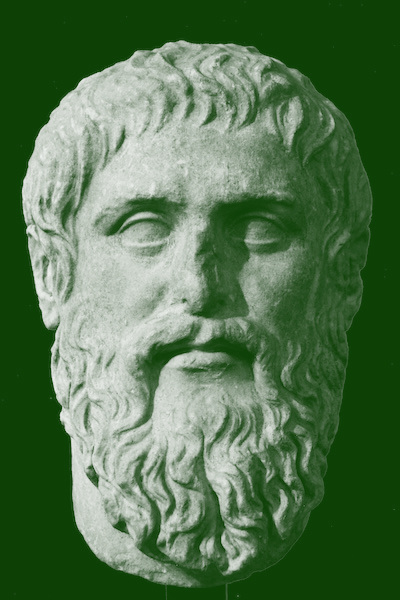

Brushstroke AI Advisory
Artisan1ac Project
Nagra IV-S, Akai MPC60, Roland Drums, Canon Cameras, Fuji XT-4, Tamron, Darkroom, Zoom Hn4, BlackMagic, RED Digital, Canvases, Oil/Acryl
Art Repositories
Art Repos
Microsoft Resources
Microsoft Links
IaC Dev
Terraform, Ansible, Docker, Helm, K8s, Jenkins, Gitlab, GitHub, Azure DevOps, AWS, GCP
Kubernetes, Containers and more ...
Open Source Engines
Open Source Addict - using Ubuntu 26.04 and Zorin Desktops, Fedora Atomic, Fedora 44, Ubuntu 26.04 Servers
AWESOME Lists for Microsoft CM, MDM and Cloud -- Linux Dev -- Docker, K8s -- AI & Agents
Awesomeness - Awesome-WSL - Awesome Mac - Awesome Linux - Awesome TUI
Lifecycle
The Studio - Belgium based
Click any stage below to inspect the step characteristics, opinions, personality, support and issues.
1
ART
2
Atelier Setup
3
AI Design Workflows
4
Travels and Opinion Blog
// Code snippet loading...
Architecture
Azure DevOps, Microsoft Entra, M365 and Microsoft Intune
MediaConveyor provides a modular, glass-box engine designed to integrate with existing cloud infrastructure without lock-in.
Product Specialist Microsoft Configuration Management and Deployment
Long experience in Microsoft Technology. Started out as a coder, MSI specialist and evolved throughout the years to Citrix, SCCM, Microsoft Entra, Microsoft Intune
AI Automation and AI Agentic Workflows
Through prompting, I build Kubernetes Clusters on my homelab. Automation is provided using Ansible and HCL Terraform Registries.
Sopra Steria RightExperience MDM Model
AppFactory v3
Our Philosophy
The Image and the Pictorial
